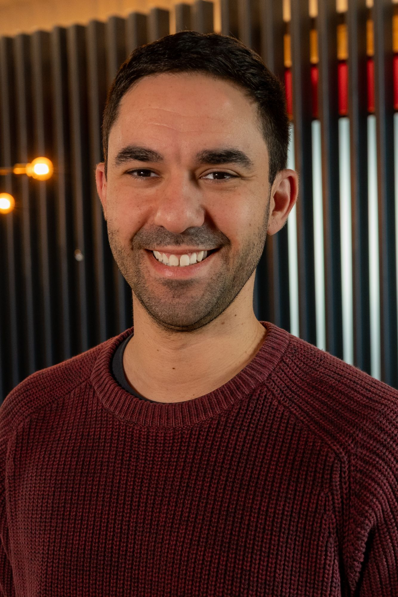

Fractional Product Lead
for Early Stage Start Ups
I help start ups validate, launch, and scale their products
Product needs a leader. Just not a full time one yet
You're a founder wearing a lot of hats. Even with your solid product instincts and a clear vision, you might find it difficult to:
- Turn your vision into a first version you can ship and test: your multi-year vision is clear in your head, but nobody has scoped what to build first, and you can't tell if it's right until real users touch it. You don't want to hire a full time team before you know.
- Stay out of the weeds on complex products without losing control of them: requirements, prototypes, cross functional meetings, and tactical calls all route through you, so every small issue lands on your desk instead of only the ones that matter.
- Get a team working well together before the first full time hires arrive: work runs on ad hoc habits, delivery is slower than it should be, and new hires will walk into chaos without a clear way of working.
Despite experiencing these problems, you feel stuck because you don't need a full time product person yet.
I'm the fractional product lead you can hand things off to. I turn your vision into clear priorities for the team, make the day-to-day product calls, and keep cross functional teams moving together.
You get your time back for the rest of the business. Clients hire me to:
- Launch a new product: Turn your vision into a scoped first version and get it in front of real users to validate before committing to a full time team.
- Assist with day-to-day product delivery: Get in the weeds on highly complex products to scope requirements, build prototypes, run cross functional meetings, and raise only the important issues to you
- Build systems for your team to thrive: Lay a solid foundation and way of working to accelerate product delivery and make onboarding for incoming full time hires easier
About Nick

I help early stage founders hand off product with confidence. I have 12+ years in product across ecommerce, healthcare, fintech, and crypto, building products including developer platforms for ecommerce marketplaces and crypto staking to an AI telepsych consumer app.
I found product at Jet.com in 2014 and was leading a team of five engineers within a year. Since then, I've joined four early stage companies full time, two of which were acquired while I was working there: Jet.com by Walmart and Bison Trails by Coinbase. I consult for early stage start ups (seed to series C) and small businesses.
I'm scrappy, empathetic, and quick to learn a new industry. I am a domain-agonstic product leader who will work well with an internal domain experts to deliver a great product. I do my best work with small and mighty teams, where tight constraints force sharper focus and more creative solutions.